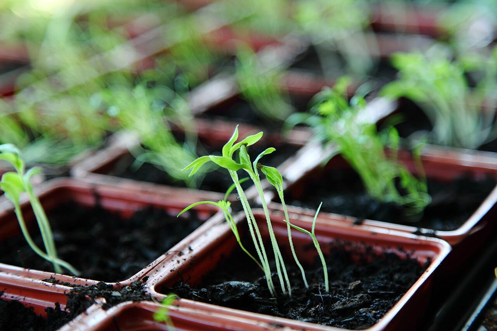
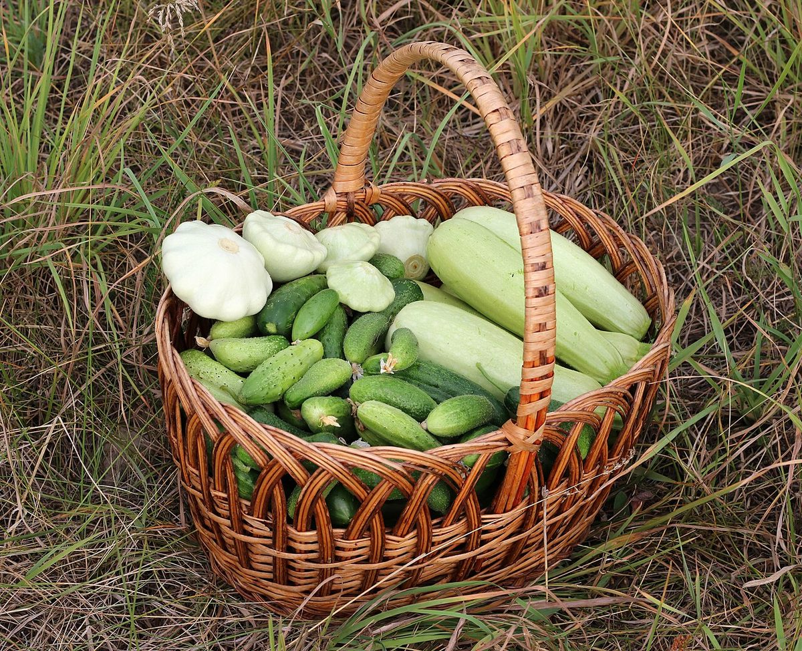

お店について
ここでは「分かっていること」と「制作側の案」を、分けてお伝えします。

分かっていること
- 店名:Quyana Farm & Cafe
- 所在地:群馬県館林市赤生田町
- 電話:0276-56-9998
- Instagram:@quyana_farmcafe
上記以外は、確認できていません。
制作側からのご提案
制作側の案です。お店の理念ではありません。
「ファーム」と「カフェ」という言葉から、制作側は「ひと休みの余白」を思い描きました。
郊外で外の空気を感じながら、ほっとひと息つく。そんな寄り道の時間を、ページ全体の流れにしています。
畑や食材について、ここで何かを言い切ることはしていません。お店の想いが分かりましたら、このページを書き換えます。
これから伺いたいこと
- お店の想い:準備中(お問い合わせください)
- 食材へのこだわり:準備中(お問い合わせください)
- 農園の有無:準備中(お問い合わせください)
- メニュー:準備中(お問い合わせください)
- 営業時間:準備中(お問い合わせください)
スタッフのご紹介:準備中(お問い合わせください)
